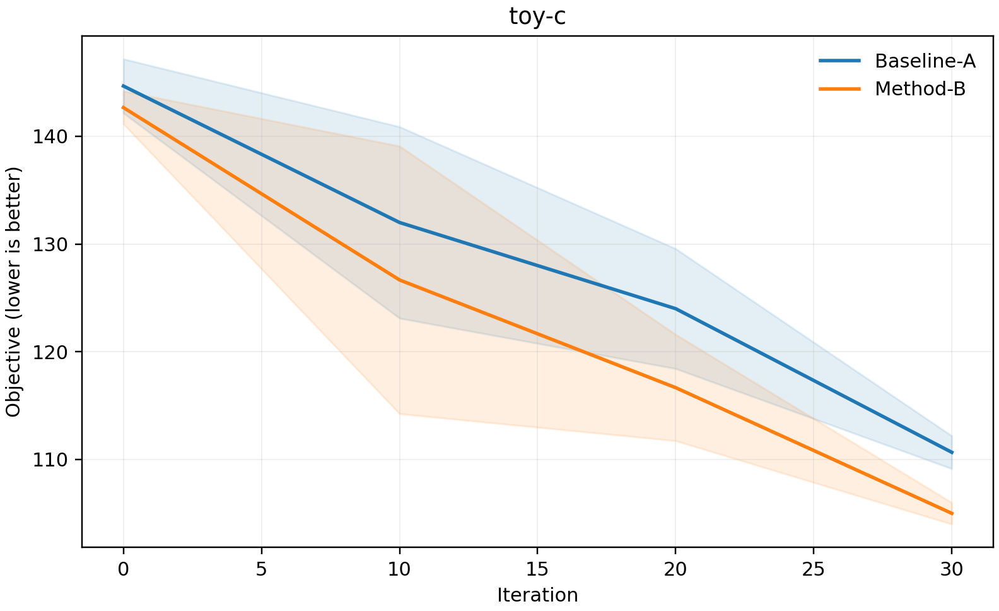

车辆路径算法往往包含随机初始化、随机破坏修复或概率式状态转移。同一个算法在同一个实例上运行多次，最终结果也可能不同。因此，实验整理不是求解结束后的附属工作，而是算法证据链的一部分。
手工复制最优值、在不同工作簿中计算均值、临时修改绘图脚本，短期看起来很快，长期却会产生三个问题：统计口径难以复查、图表无法稳定复现、实验目录与论文表格逐渐失去对应关系。
求解器只负责输出原始记录；独立的报告工具负责校验、聚合、绘图和导出。两者通过明确的数据格式连接。
一、先统一三类输入
VRP Experiment Toolkit 使用长表 CSV，而不是绑定某一种算法的目录结构。最小工作流由三类文件组成。
1. 最终结果
algorithm,instance,seed,objective,runtime
Baseline-A,toy-c,1,112.0,8.2
Method-B,toy-c,1,106.0,9.4
每一行代表一次独立运行。`algorithm`、`instance` 和 `seed` 共同标识实验，`objective` 是最终目标值，`runtime` 以秒为单位。还可以加入 `vehicles` 与 `distance` 等通用数值列。
2. 收敛日志
algorithm,instance,seed,iteration,objective
Baseline-A,toy-c,1,0,145.0
Baseline-A,toy-c,1,10,125.0
收敛日志记录运行过程中的历史最好值。不同随机种子不必在完全相同的迭代点写日志，工具会在聚合阶段完成对齐。
3. 可选的 BKS
instance,bks
toy-c,103.0
toy-r,148.0
如果提供最好已知解，工具会计算相对差距；没有 BKS 时，其余汇总和绘图功能仍然可用。
二、用一条命令生成报告
安装仓库后，可以直接运行内置的合成示例：
vrp-report analyze --results examples/synthetic/results.csv --convergence examples/synthetic/convergence.csv --bks examples/synthetic/bks.csv --output-dir reports --step 10
命令会在 `reports` 目录中生成 `summary.csv`、`summary.xlsx`、`summary.tex`、`convergence_mean.csv`，以及每个实例对应的收敛图。CSV 方便继续分析，Excel 适合人工检查，LaTeX 可以进入论文排版流程。
三、论文表格中的数字分别回答什么？
- Best：算法在多次运行中达到的最好结果，描述潜在求解能力。
- Mean：所有独立运行的平均结果，描述典型表现。
- Std：结果的离散程度，用于观察随机算法的稳定性。
- Runtime：平均运行时间，用于讨论效果与计算成本之间的权衡。
- BKS Gap：最好结果相对最好已知解的百分比差距。
工具采用如下 Gap 定义：
gap_percent = 100 × (objective_best - bks) / |bks|
这里默认目标值越小越好。研究者仍需在论文中明确优化方向、终止条件、随机种子数量和 BKS 来源，不能只交付一张没有实验语境的表格。
四、不规则日志怎样画成平均收敛曲线？
实际运行中，不同种子可能在第 10、17、25 次迭代写入日志，不能直接按行号求平均。工具先建立统一迭代网格，再对每条运行轨迹使用“取当前迭代及之前最近一次观测值”的方式采样，最后计算同一网格点上的均值和标准差。
这种前向保持方式符合历史最好值的语义：如果第 20 次迭代没有新记录，那么算法截至第 20 次迭代达到的最好值，仍然是此前最近一次记录的最好值。

五、怎样接入自己的 ALNS、ACO 或学习型算法？
- 固定实验标识。 每次运行都记录算法名、实例名和随机种子。
- 保存原始输出。 求解结束时追加一行最终结果，运行过程中追加收敛记录。
- 不要在求解器中计算跨种子统计。 保留每次运行的原始值，把聚合交给报告工具。
- 先用少量合成或试运行数据检查格式。 确认列名、单位和优化方向后，再启动大规模实验。
- 把报告命令写入实验说明。 让图表和表格可以由其他人重新生成。
这种接口不会要求不同算法采用相同代码框架。只要最终转换为约定的长表 CSV，C++、Python 或混合实现都可以进入同一套比较流程。
六、提交论文前的复现清单
- 随机种子、实例版本与终止条件是否完整保存；
- 所有算法是否采用相同预算和统计口径；
- 失败运行、不可行解和缺失值如何处理；
- BKS 的来源与版本是否可追溯；
- 表格中的均值和标准差是否能从原始记录重新计算；
- 收敛图的横轴究竟是时间、迭代次数还是评估次数；
- 论文中的最终数字是否对应一个确定的代码提交。
结语
可复现实验不等于增加更多表格，而是让每个结论都能回到明确的原始记录、统计规则和代码版本。把报告过程从求解器中分离出来，可以减少手工整理错误，也让不同算法之间的比较更透明。
VRP Experiment Toolkit 当前版本聚焦最常见的汇总与收敛分析，不包含任何求解器、训练模型、基准解或未公开实验结果。后续改进也会继续围绕通用科研工程能力展开。